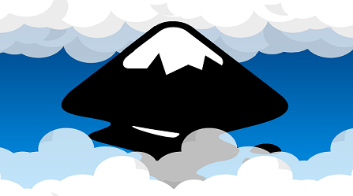
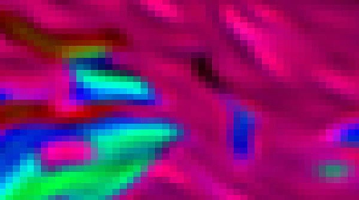

Grafika wektorowa to rodzaj grafiki komputerowej. Opisuje on obrazy za pomocą geometrii i matematycznych równań, zamiast pikseli, które są charakterystyczne dla grafiki rastrowej.
Sposoby opisu obrazu w grafice wektorowej
Punkty i linie: Obraz wektorowy jest tworzony przy użyciu punktów, które są połączone liniami, tworząc kształty.
Krzywe: Krzywe Beziera czy krzywe B-sklejane, do tworzenia płynnych i elastycznych kształtów.
Obiekty geometryczne: Obiekty geometryczne, takie jak prostokąty, okręgi, elipsy i wiele innych
Zastosowanie grafiki wektorowej
Projektowanie graficzne: Wykorzystywane do projektowania logo, ikon, plakatów, ulotek i innych elementów graficznych, pozwala na precyzyjne skalowanie bez utraty jakości.
Ilustracje: Tworzenie ilustracji, rysunków technicznych, komiksów i wszelkiego rodzaju obrazów, które wymagają czystych linii i płaskich kolorów.
Projektowanie stron internetowych: Grafika wektorowa może być wykorzystywana do tworzenia interaktywnych elementów, animacji SVG oraz responsywnych projektów, które dostosowują się do różnych rozdzielczości ekranu.
Przykład Grafiki Wektorowej

Formaty plików używane w grafice wektorowej
SVG: Jest to otwarty format plików wektorowych. SVG jest idealny do tworzenia grafiki dla stron internetowych.
AI: Jest to format plików używany przez program Adobe Illustrator. Przechowuje obrazy wektorowe oraz informacje o edycji, warstwach i innych elementach projektu.
EPS: Jest to format plików wektorowych, który jest często używany do druku, zarówno w profesjonalnych drukarniach, jak i w domu.
Rozszerzenia plików grafiki wektorowej
.svg: Rozszerzenie pliku dla formatu SVG.
.ai: Rozszerzenie pliku dla formatu Adobe Illustrator.
.eps: Rozszerzenie pliku dla formatu Encapsulated PostScript.
Programy do tworzenia grafiki wektorowej
Adobe Illustrator: Jest to profesjonalne oprogramowanie do tworzenia grafiki wektorowej, oferujące zaawansowane narzędzia i funkcje.
Inkscape: Jest to bezpłatny program do tworzenia grafiki wektorowej, który dostarcza wiele narzędzi do projektowania i edycji.
CorelDRAW: To komercyjne oprogramowanie do projektowania grafiki wektorowej, które jest popularne wśród profesjonalnych projektantów.
Affinity Designer: Jest to nowoczesne narzędzie do projektowania grafiki wektorowej, które oferuje zaawansowane funkcje i wydajność.
Grafika Rastrowa
Grafika rastrowa, inaczej znana jako bitmapowa, odnosi się do rodzaju grafiki komputerowej, w której obraz jest opisywany za pomocą siatki pikseli.
Sposoby opisu obrazu w grafice rastrowej
Piksele: Obraz rastrowy składa się z pojedynczych pikseli, które są umieszczone w siatce. Każdy piksel ma przypisaną wartość koloru, co określa jego wygląd i położenie na obrazie.
Rozdzielczość: Grafika rastrowa jest zdefiniowana przez rozdzielczość. Im wyższa rozdzielczość, tym więcej pikseli jest używanych do opisu obrazu, co przekłada się na większą szczegółowość.
Zastosowanie grafiki rastrowej
Fotografia cyfrowa: Stosowana do przechowywania i edycji fotografii cyfrowych, ze względu na możliwość reprezentacji milionów kolorów i szczegółów.
Grafika komputerowa: Grafika rastrowa jest używana do tworzenia grafiki komputerowej, takiej jak obrazy, ilustracje, tekstury, grafiki interfejsów użytkownika itp.
Projektowanie graficzne: Tworzeniu plakatów, ulotek, banerów reklamowych, opakowań i innych materiałów marketingowych.
Przykład Grafiki Rastrowej

Formaty plików używane w grafice rastrowej
JPEG: Jest to popularny format kompresji stratnej. Jest efektywny w kompresji plików, ale może prowadzić do utraty jakości przy wysokim stopniu kompresji.
PNG: Format PNG oferuje bezstratną kompresję, co oznacza, że jakość obrazu nie ulega utracie przy kompresji. Jest często używany do przechowywania obrazów, które wymagają przezroczystości.
GIF: Format GIF obsługuje animacje i przezroczystość. Jest powszechnie używany do krótkich animacji, ikon, przycisków itp.
BMP: Jest to prosty format pliku bez kompresji, który przechowuje dane pikseli w formie nieprzetworzonej. Często jest używany w systemach Windows.
Rozszerzenia plików grafiki rastrowej
.jpg/.jpeg: Rozszerzenia plików dla formatu JPEG.
.png: Rozszerzenie pliku dla formatu PNG.
.gif: Rozszerzenie pliku dla formatu GIF.
.bmp: Rozszerzenie pliku dla formatu BMP.
Programy do tworzenia grafiki rastrowej
Adobe Photoshop: Jest to najpopularniejszy program do edycji i tworzenia grafiki rastrowej. Oferuje zaawansowane narzędzia do obróbki zdjęć, retuszu, tworzenia ilustracji itp.
GIMP: Jest to bezpłatny i otwartoźródłowy program do edycji grafiki rastrowej. Oferuje wiele funkcji podobnych do Adobe Photoshop.
Corel PaintShop Pro: To komercyjne oprogramowanie do edycji grafiki rastrowej, jest dostępne dla użytkowników domowych i profesjonalnych.
Affinity Photo: Jest to nowoczesne narzędzie do edycji grafiki rastrowej. Oferuje wiele funkcji i wydajność.